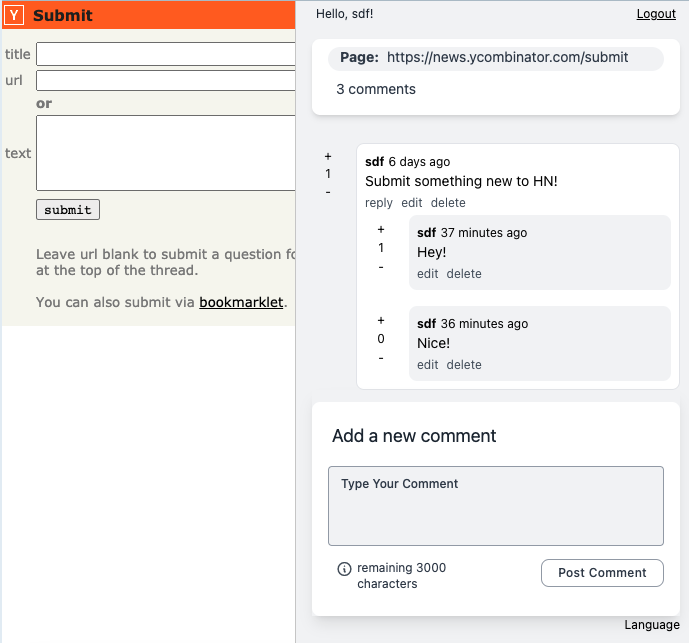
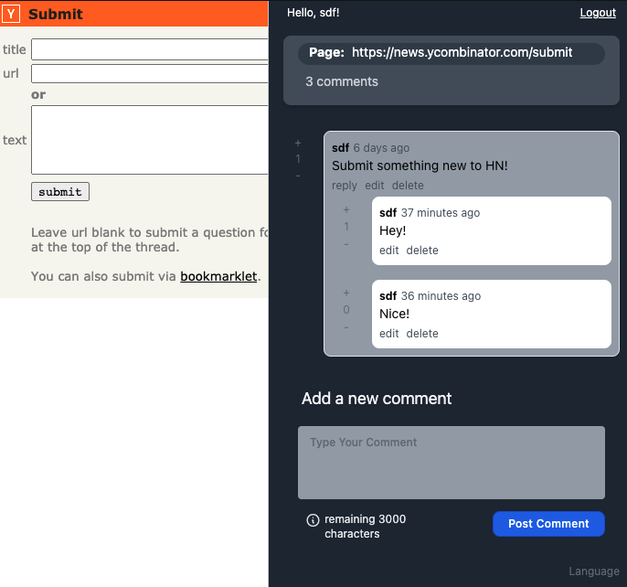

Licom - comments on
Licom - comments on Licom is a simple and open-source plugin for your browser that adds the feature to leave comments on every page, even if it doesn't have that option itself.
Read others comments, vote and reply to them.
Available in light, dark mode and 5 languages :)

